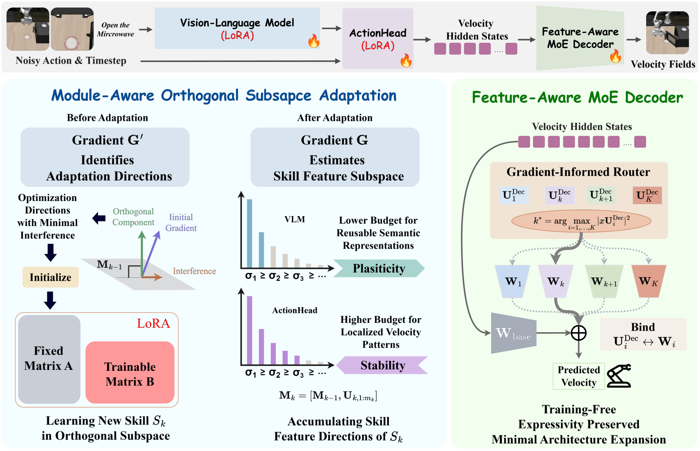
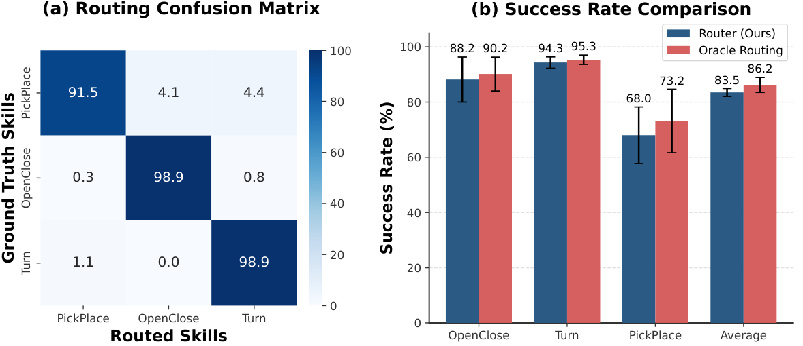

OrthoSkillVLA: Continual Skill Learning via Gradient-Informed Skill Subspace Adaptation
Jiaqi Wang, Zhou Fang, Qiongfeng Shi, Yi Zhou · Southeast University (School of Computer Science & Engineering / School of Electronic Science & Engineering)
제출: 2026년 8월 20일 (v1) · 백본 X-VLA(~0.9B) · LIBERO-100 skill-incremental + xArm 실로봇
한 줄 요약 (TL;DR)
사전학습된 VLA(Vision-Language-Action) 모델에 새로운 스킬을 순차적으로 이어 학습(continual learning, 이전 스킬 데모를 다시 보여주지 않음)할 때 발생하는 catastrophic forgetting(예전 스킬 성능이 급락하는 현상)을, ① VLM 백본과 ActionHead에 모듈별로 다른 세기의 직교 부분공간 제약(gradient-informed orthogonal subspace adaptation)을 걸고 ② 마지막 velocity decoder에는 스킬별 경량 MoE 전문가 + 학습 불필요 라우터를 붙여 해결. LIBERO 3-스킬 스킬-증분(skill-incremental) 벤치에서 최종 평균 성공률 83.50% (EWC 25.17%, KeepLoRA 56.61%), 실로봇 4-스킬에서 최종 86.25%(KeepLoRA 71.25%)로 큰 폭 우위.
1배경 · 문제의식
VLA(Vision-Language-Action, 시각-언어-행동 통합 정책 모델)는 대규모 사전학습 후 파인튜닝으로 스킬을 얻는다. 그러나 실전에서는 스킬이 시간에 걸쳐 하나씩 추가되고 이전 스킬의 데모(demonstration replay, 재현 재학습용 데이터)를 다시 접근할 수 없는 경우가 많다. 이 상황에서 순진하게 파인튜닝하면 새 행동 패턴을 맞추다가 기존 표현이 덮여 catastrophic forgetting(예전 스킬의 성공률이 급격히 떨어지는 현상)이 발생한다.
저자들의 진단: VLA를 하나의 균질한 모델로 보고 획일적 제약을 걸면 실패한다. 왜냐하면 VLM 백본은 재활용 가능한 시맨틱 표현을 담고 있어 새 스킬마다 어느 정도 여유가 필요하지만 (엄격 제약 시 capacity exhaustion, 즉 새 스킬을 담을 파라미터 여지가 고갈), ActionHead는 관측→속도(velocity, 다음 순간의 행동 변화율) 매핑에 매우 민감해 작은 변경도 예측을 왜곡하기 때문이다. 원문 인용: "parameter updates can interfere with established representations of previously learned skills, leading to distorted velocity-field predictions and severe performance degradation."
추가로 최종 velocity decoder(action head의 마지막 선형층. 조건부 flow-matching으로 연속 action을 뽑는 부분)는 표현력이 병목이라, 여기서 스킬 간 간섭이 특히 심하다.
2핵심 Contribution
VLA 구성요소별 취약성 분리 진단 — 백본 VLM은 "용량 고갈"이 위험, ActionHead는 "미세 교란 민감"이 위험. 따라서 단일 제약이 아니라 모듈별 예산(module-aware budget)이 필요함을 실험으로 뒷받침.
Gradient-Informed Skill Subspace Adaptation — 이전 스킬들이 이미 점유한 특징 부분공간(subspace, 특정 방향들의 span)을 정규직교 기저(orthonormal basis)로 추적하고, 새 스킬의 그래디언트를 그 부분공간과 직교한 방향으로만 투영(orthogonal projection)해 LoRA(Low-Rank Adaptation, 낮은 랭크 행렬 두 개 A·B로 파라미터 갱신을 근사하는 파인튜닝 기법) 업데이트를 제한. 모듈별로 에너지 임계값을 달리해(VLM은 완화 0.99, Head는 엄격 0.9999) 서로 다른 보존 강도를 부여.
Feature-Aware MoE Velocity Decoder + Training-Free Router — 병목인 velocity decoder에는 스킬마다 가벼운 전문가(expert, 스킬 전용 소형 파라미터 세트)를 붙이는 MoE(Mixture-of-Experts, 여러 전문가 중 하나를 골라 쓰는 구조)를 두고, 라우팅은 학습이 필요 없는 특징-부분공간 유사도 기반 프로젝션 라우터로 처리. 라우팅 정확도 98.9%(OpenClose/Turn), 91.5%(PickPlace) 달성.
3Method
백본 & 문제 세팅
백본은 X-VLA(~0.9B 파라미터 규모의 오픈 VLA). 파인튜닝은 skill-incremental continual learning 프로토콜 — 스킬 k=1,2,…,K를 순차 학습, 학습 시 이전 스킬의 데이터는 접근 금지. 각 스킬은 여러 태스크로 구성(예: OpenClose, Turn, PickPlace).
각 모듈(선형층)마다 지금까지 학습한 스킬들이 점유한 입력 특징 부분공간을 나타내는 정규직교 기저 Mk−1(열들이 서로 수직이고 크기 1인 행렬)를 유지한다. 새 스킬 k를 학습하기 전, 그 스킬의 소량 데이터로 축적 그래디언트 Gk(파라미터에 대한 그래디언트를 몇 배치 평균)를 뽑아 이전 부분공간에 속하는 성분을 제거한다.
왜 직교 투영인가? 새 스킬의 학습을 "이전 스킬이 안 쓰던 새 방향"으로만 밀면 옛 방향의 매핑이 변하지 않아 예전 스킬 성능이 보존된다. 수식으로: Ĝk = Gk − ProjMk−1(Gk) — 그래디언트를 이전 기저에 수직인 성분만 남김.
남은 잔차 그래디언트 Ĝk에 SVD(Singular Value Decomposition, 특이값 분해)를 걸어 새로 필요한 방향(상위 특이벡터)을 뽑고, 각 방향의 에너지 비율(누적 특이값 제곱 / 전체)이 임계값 ϵ를 만족할 때까지 채택. 이 방향들을 Mk에 확장 병합하여 다음 스킬 학습 시 다시 보존 대상으로 삼는다.
모듈별 예산 (Module-Aware Budgeting)
에너지 임계값을 모듈에 따라 다르게 설정:
VLM(비전-언어 백본): ϵVLM = 0.99 — 완화. 시맨틱 표현은 재활용 가능하므로 새 스킬에 여유 공간을 남겨 용량 고갈(capacity exhaustion)을 방지.
ActionHead: ϵHead = 0.9999 — 엄격. 국소 velocity 패턴은 미세 교란에도 왜곡되므로 거의 완전 보존.
Ablation에서 Head 임계값을 0.99로 낮추면 최종 성공률이 84.83% → 59.83%로 붕괴 (ActionHead 점유율 2.17%밖에 안 됨) — 임계값의 모듈별 분리가 결정적.
Orthogonal LoRA 업데이트
파라미터 갱신은 LoRA 형식: ΔWk = A·B. 여기서 down-projection A는 잔차 그래디언트 Ĝk의 상위 r개 특이벡터로 초기화 후 동결(freeze), up-projection B만 학습. A가 직교 부분공간의 방향을 고정하므로 학습 중에도 갱신이 그 부분공간을 벗어나지 않는다. 대상은 고차원 선형층(입출력 ≥ 1024)에 국한, LoRA rank r = 64.
Feature-Aware MoE Velocity Decoder
마지막 velocity decoder(속도장 v를 뽑는 선형층)는 표현력 병목이라 직교 제약만으론 부족. 사전학습된 Wbase는 동결하고, 스킬마다 소형 잔차 Wk를 하나씩 추가: vk = xk(Wbase + Wk). 각 전문가의 오버헤드는 base 모델의 0.0046%/스킬에 불과.
Training-Free Router: 새 스킬 학습 시 그 스킬 특징들의 부분공간 UiDec를 저장. 추론 때는 입력 특징 x를 각 전문가 부분공간에 투영한 크기가 최대인 것을 선택: k* = argmaxi ‖x UiDec‖². 라우터 자체는 학습 파라미터가 없어 continual 도중 라우터가 잊혀질 위험이 없다.
데이터 & 학습
시뮬 벤치
LIBERO-100을 skill-incremental로 재구성 — 스킬 3개(OpenClose, Turn, PickPlace), 3가지 순서로 평가
실로봇
xArm + dexterous hand(다관절 손), 4스킬(Flip, Pick, Push, Press) 각 40–50 시범
지표 정의 — Final SR: 모든 스킬 학습 후 각 스킬 성공률 평균, Forward Transfer(FWT): 새 스킬을 학습한 직후의 성능(높을수록 잘 배움), Negative Backward Transfer(NBT): 이후 스킬을 배우면서 이전 스킬이 잊힌 정도(낮을수록 좋음, 즉 forgetting 지표), AUC: 학습 진행 곡선 아래 면적(전체적으로 유지되면 높음).
방법
Final SR ↑
FWT ↑
NBT ↓
AUC ↑
SeqLoRA (순차 LoRA, 아무 제약 없음)
32.44 ± 3.31
—
—
—
IncLoRA (스킬마다 새 LoRA 추가)
34.11 ± 1.70
—
—
—
EWC (Elastic Weight Consolidation, Fisher 정보 기반 가중치 규제)
25.17 ± 4.38
—
0.68 ± 0.04
—
KeepLoRA (이전 LoRA를 유지)
56.61 ± 7.22
—
0.46 ± 0.16
0.72 ± 0.02
OrthoSkillVLA
83.50 ± 1.42
0.94 ± 0.03
0.13 ± 0.06
0.88 ± 0.01
EWC 대비 +58.3%p, 가장 강한 베이스라인 KeepLoRA 대비 +26.9%p. NBT 0.13은 forgetting이 거의 없음을 의미(KeepLoRA 0.46, EWC 0.68).
실로봇 결과 (4스킬 순차 학습)
방법
Flip
Pick
Push
Press
평균
KeepLoRA
—
—
—
—
71.25
OrthoSkillVLA
—
—
—
—
86.25
최종 평균에서 +15.0%p. 실로봇에서도 시뮬 결과의 이득 패턴이 재현.
라우팅 정확도 (Figure 4)
학습이 필요 없는 프로젝션 라우터가 OpenClose/Turn에서 98.9%, PickPlace에서 91.5%의 정확도 달성. Oracle 라우팅(항상 정답 전문가 선택) 대비 성공률은 83.5% vs 86.2% — 라우팅 손실이 2.7%p에 불과.
5Ablation (주요 발견)
Module-Aware vs MoE 성분별 (Table 3)
구성
Final SR ↑
NBT ↓
Unified-Frozen (모든 모듈 동일 임계, 전문가 없음)
56.61
0.46
Separated-Frozen (모듈별 임계, 전문가 없음)
60.44
0.42
Unified-MoE (모듈 동일 임계 + MoE decoder)
67.94
0.33
Separated-MoE (전체, 논문 최종)
83.50
0.13
모듈별 임계값 분리 단독 (+3.8%p)이나 MoE 단독 (+11.3%p)보다 두 기법 결합의 초가법적(super-additive) 시너지(+26.9%p)가 두드러짐.
에너지 임계값 민감도 (Table 4-5)
ϵHead = 0.9999 (엄격): Final SR 84.83%, VLM 부분공간 점유율 23.07%.
ϵHead = 0.99 (완화): Final SR 59.83%, ActionHead 점유율 겨우 2.17%. → ActionHead에 완화 임계를 적용하면 필요한 방향을 놓쳐 학습 자체가 실패.
LoRA rank
r = 32 → Final SR 79.50
r = 64 (최적) → 83.50, AUC 0.88
r = 96 → 74.06 (랭크가 너무 크면 노이즈 방향까지 학습해 열화)
6핵심 Figure / Table

Figure 1 — Overview of OrthoSkillVLA. 원문: "For the VLM and ActionHead, OrthoSkillVLA constrains new skill learning to gradient-informed orthogonal subspaces with module-specific budgets, preserving reusable semantic capacity while protecting localized velocity patterns. For the final velocity decoder, it allocates a compact expert for each skill, and selects experts through a training-free projection router based on feature-space affinity." (출처: arXiv:2608.19589)

Figure 4 — Routing effectiveness. 원문: "Evaluation of the training-free routing mechanism on routing accuracy (a) and success rate comparison with oracle routing (b) in our simulated benchmark." 학습 파라미터가 0인 프로젝션 라우터가 오라클과 2.7%p 차이만 나 실사용 가능성 입증. (출처: arXiv:2608.19589)
Table 1 (LIBERO skill-incremental) — 핵심 성능 주장의 근거. OrthoSkillVLA(83.50)가 EWC(25.17)·KeepLoRA(56.61) 등 대표적 continual learning 베이스라인들을 큰 격차로 상회, NBT(0.13)로 forgetting을 실질적으로 억제함을 보여줌.
Table 3 (Ablation) — 논문의 이론적 핵심(모듈별 예산 + MoE decoder)이 각각 유효할 뿐 아니라 결합 시 초가법적 시너지(83.50 vs Unified-Frozen 56.61)를 낸다는 근거.